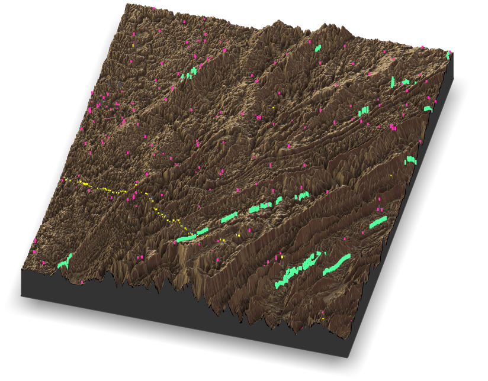
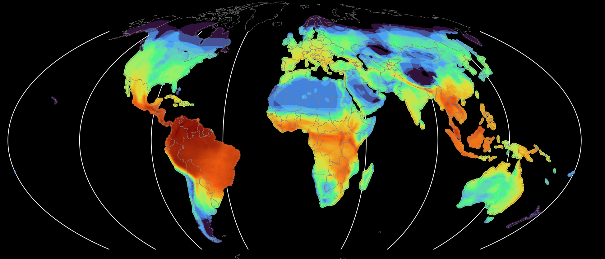
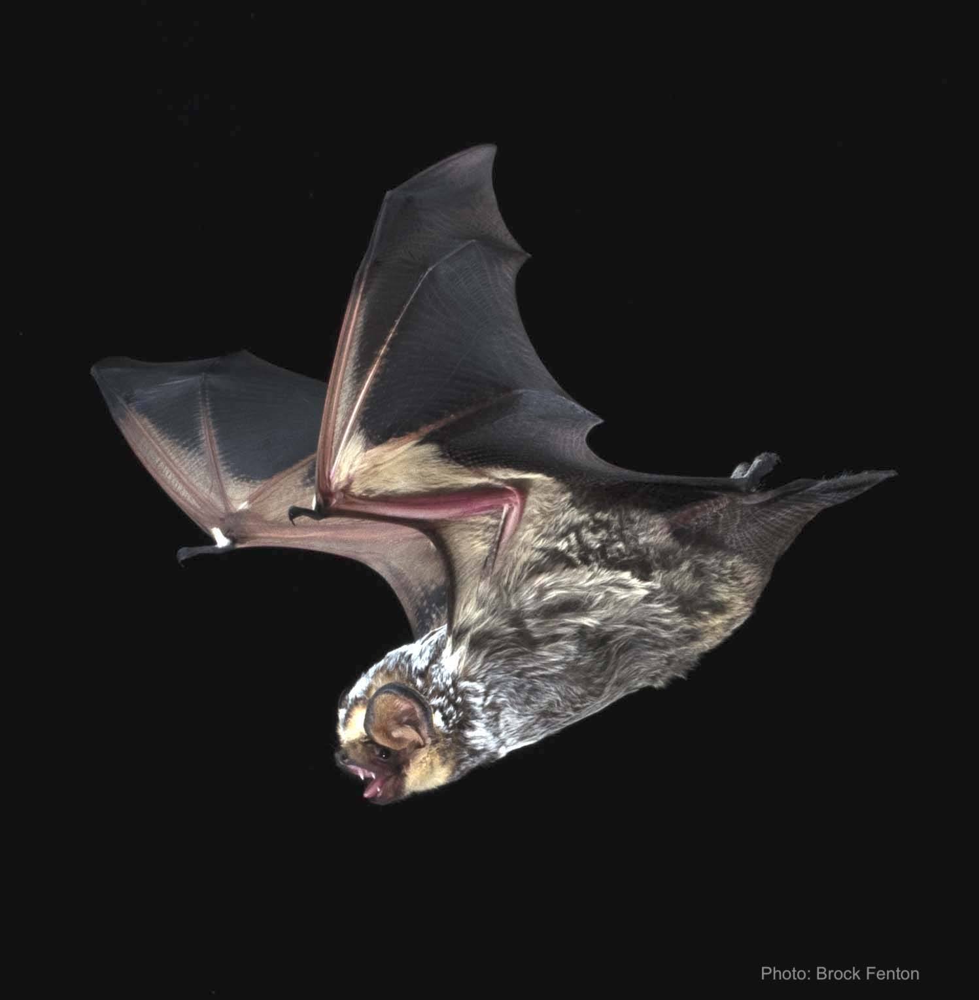
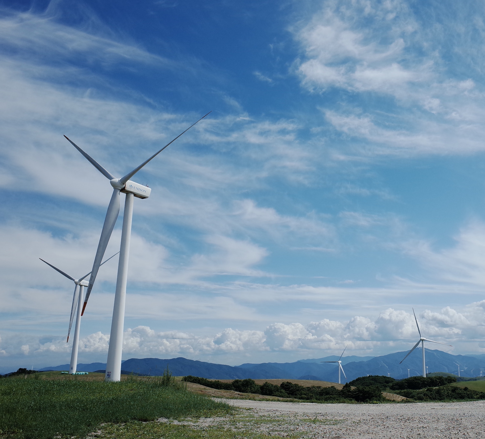
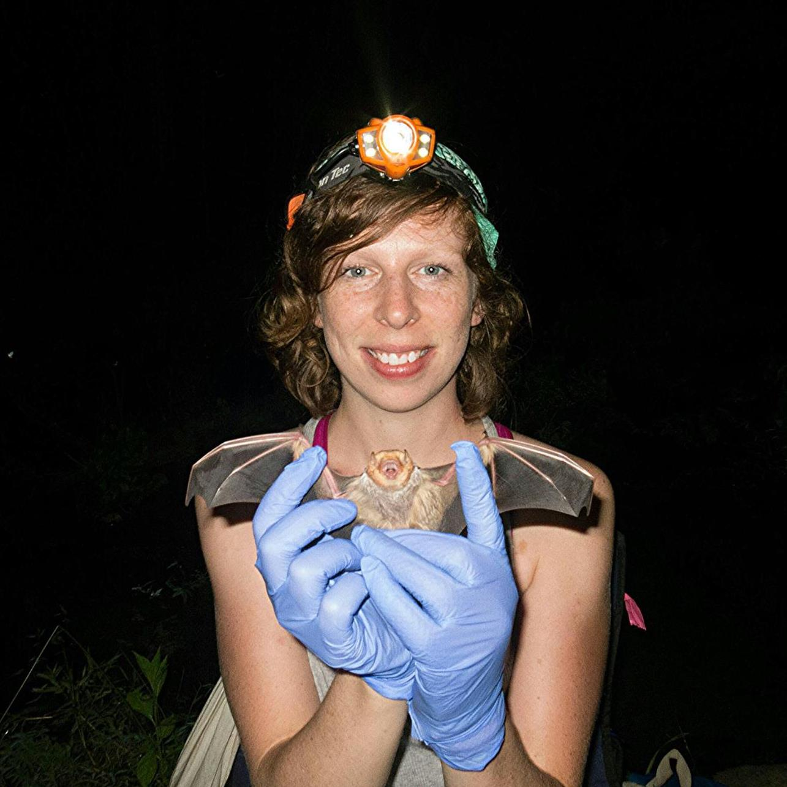

Quantitative ecology | Animal movement | Biodiversity informatics | Conservation & Impact
I am a conservation ecologist who specializes in developing methods, tools, and approaches to tackling complex pressing conservation challenges in systems that would otherwise go without.

Seasonal animal migration is a globally ubiquitous process that governs ecosystem structure and function, linking distant regions through the exchange of genes, energy, and disease. My research spans birds, bats, and insects to reveal the cryptic dynamics of migration and its consequences for wildlife conservation. Transitioning to renewable energy is essential to limit the worst effects of climate change — but wind energy development disproportionately affects migratory species. I study how migratory behavior drives fatality risk at wind energy facilities and develop tools to target interventions toward the times and places when migrants are most present.

The volume of openly accessible biodiversity data is growing exponentially, but coverage remains deeply uneven across taxa, regions, and time. I develop methods and tools to harness participatory science platforms like iNaturalist, diagnose biases in global biodiversity databases, and fill knowledge gaps in under-studied regions. A central future direction is quantifying global biodiversity sampling completeness across the Global Biodiversity Information Facility (GBIF) — to identify where evidence-based conservation policy, including ambitious frameworks like the Kunming-Montreal 30x30 target, is most constrained by missing data.

Bats are among the most diverse and least-studied groups of mammals. My work deepens understanding of bat ecology and informs conservation by integrating data across scales — from historical museum specimens to novel community science observations. A major focus is the ongoing white-nose syndrome epidemic, one of the most devastating emerging wildlife diseases, which threatens cave-hibernating bats whose persistence is tightly coupled to cave microclimate. I investigate the relationships between climate change, disease dynamics, and bat behavior to identify where and how at-risk populations can be supported across the annual cycle.

Understanding animal behavior and biodiversity at scale requires expanding the toolkit beyond traditional field methods. I develop and apply remote and non-invasive monitoring approaches — including endogenous chemical markers, passive acoustic monitoring, and weather surveillance radar — to reveal wildlife patterns that would otherwise remain hidden. As part of the Limelight Rainforest team (winners of the $5M XPRIZE Rainforest grand prize), I developed a human-in-the-loop machine learning pipeline for bat bioacoustics and helped link canopy biodiversity data from eDNA and acoustics to ecosystem structure and services. I am also actively developing radar-based approaches to monitor animal movements at broad scales — a rich and rapidly advancing frontier for migration ecology and conservation.
I leverage a broad suite of methodological approaches to tackle pressing conservation challenges, with a particular focus on developing the methods needed to conduct research in under-studied systems and taxa.
Understanding how organisms interact with, and are limited by, their environment is a central question of ecology.
Learn more →The availability of biodiversity data is increasing exponentially. I research its generation and develop methods to apply it rigorously.
Learn more →Analyzing endogenous markers can help scale studies of animal movement from the individual to that of the population.
Learn more →I am passionate about developing open-source software to promote accessible and reproducible science.
Learn more →
I am a quantitative ecologist at Bat Conservation International. I have also led the bat bioacoustics and bioinformatics efforts for XPrize Rainforest finalist team Limelight Rainforest.
I completed my PhD at the University of Florida in the Animal Migration and Ecology Lab working with Hannah Vander Zanden in the Department of Biology. I was a University of Florida Biodiversity Institute Fellow and was also supported by a UF Graduate School Fellowship.
My master's research was conducted at the University of Maryland Center for Environmental Science Appalachian Laboratory with Dave Nelson and Frostburg State University. In 2016 I was a National Science Foundation East Asia and Pacific Summer Institute (NSF EAPSI) Research Fellow / Japanese Society for the Promotion of Science (JSPS) Summer Research Fellow.
I attended the University of Vermont, gaining my B.S. with honors and working with Joe Roman at the Gund Institute for the Environment. I conducted fieldwork for a semester in Namibia while studying abroad with Round River Conservation Studies. Between my B.S. and my M.S., I worked as an ecological field technician on projects in Chiapas, MEX; Puerto Viejo, CRI; and Arkansas and New York, USA.
ccampbell -at- batcon.org
cjcampbell5 -at- wisc.edu
caitjcampbell -at- gmail.com